1 Night / 2 Days
Hikkaduwa → Ella → Nanu Oya → Nuwara Eliya → Horton Plains → Ambuluwawa Tower → Pinnawala Elephant Orphanage
EXPLORE1 NIGHT / 2 DAYS
Hikkaduwa – Ella – Nanu Oya – Nuwara Eliya – Horton Plains – Ambuluwawa – Pinnawala
Hikkaduwa
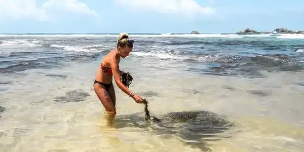
Hikkaduwa is a seaside resort town in southwestern Sri Lanka. It's known for its strong surf and beaches, including palm-dotted Hikkaduwa Beach, lined with restaurants and bars. The shallow waters opposite Hikkaduwa Beach shelter the Hikkaduwa National Park, which is a coral sanctuary and home to marine turtles and exotic fish. Inland, Gangarama Maha Vihara is a Buddhist temple decorated with hand-painted murals.
Ella
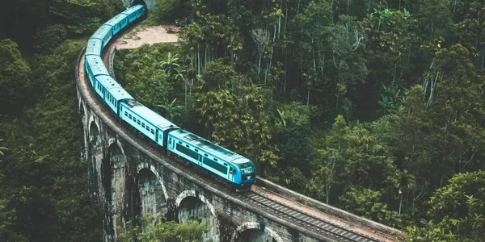
The next day after breakfast, proceed to Ella.
From Ella to Nuwara Eliya destination, you can get an amazing experience
from Ella to Nanu Oya Train Visit.
Ella is a small town in the Badulla District of Uva Province, Sri Lanka governed by an Urban Council. It is approximately 200 kilometres east of Colombo and is situated at an elevation of 1,041 metres above sea level. The area has a rich bio-diversity, dense with numerous varieties of flora and fauna.
Train Journey (Nanu Oya to Ella)
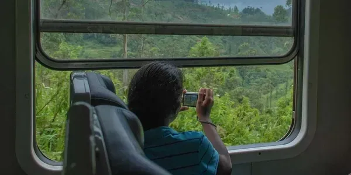
It is an amazing experience to enjoy the most beautiful scenic train ride from Nanu Oya to Ella.
Nuwara Eliya
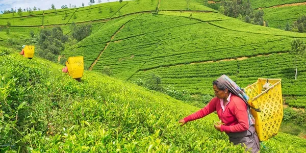
Nuwara Eliya meaning "city on the plain" or "city of light" is a town in the central highlands of Sri Lanka. It is one of the major tea-producing areas in the world. The tallest mountain in Sri Lanka "Pidurutalagala" oversees this beautiful city. It is the most visited hill country.
Day 02 – Horton Plains → Ambuluwawa Tower → Pinnawala Elephant Orphanage
The next Day, Early in the morning, we visit Horton Plains. Then, we go to Gampola to see the Ambuluwawa Tower and enjoy the view from there. After that, visit the Pinnawala Elephant Orphanage. Then, back to Hikkaduwa or to the Airport.
Ambuluwawa Tower
Ambuluwawa mountain peak has a height of 3567 feet above sea level. It is located over 1000 feet above Gampola Town. The tower is located on the summit of the mountain peak. Since there are no other mountains in the surrounding area and due to its unique location, Ambuluwawa Tower gets an undisturbed view from far away and vice versa. The tower is visible from Gampola Train Station.
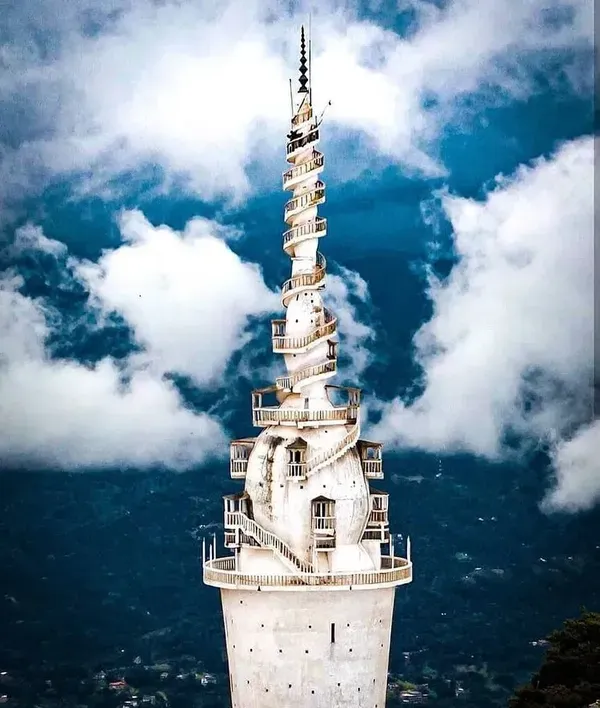
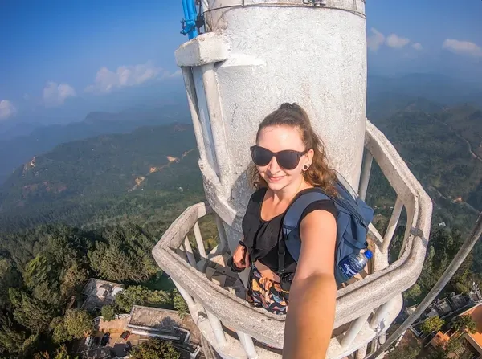
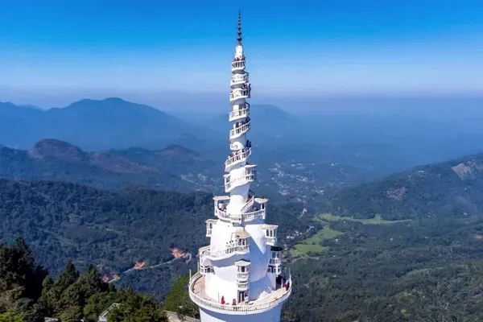
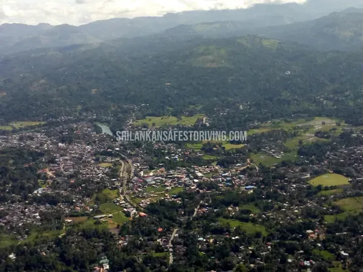
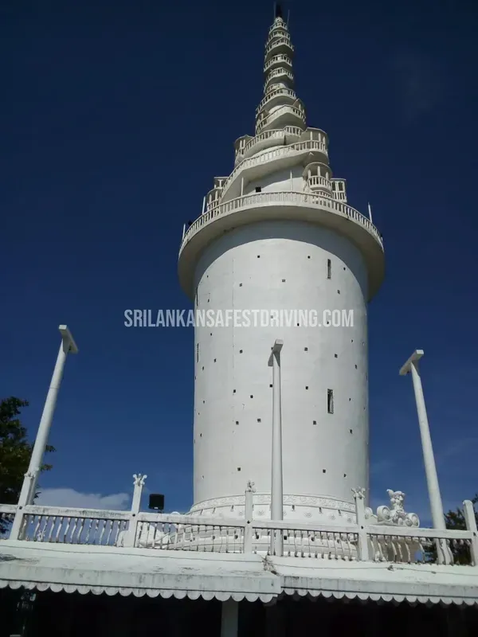
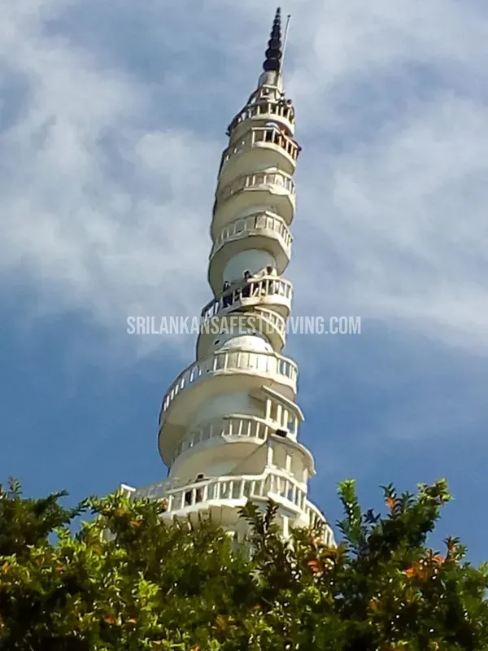
Pinnawala Elephant Orphanage
Pinnawala Elephant Orphanage is an orphanage, nursery, and captive breeding ground for wild Asian elephants located at Pinnawala village, 13 km (8.1 mi) northeast of Kegalle town in Sabaragamuwa Province of Sri Lanka. Pinnawala has the largest herd of captive elephants in the world. In 2011, there were 96 elephants, including 43 males and 68 females from 3 generations, living in Pinnawala.
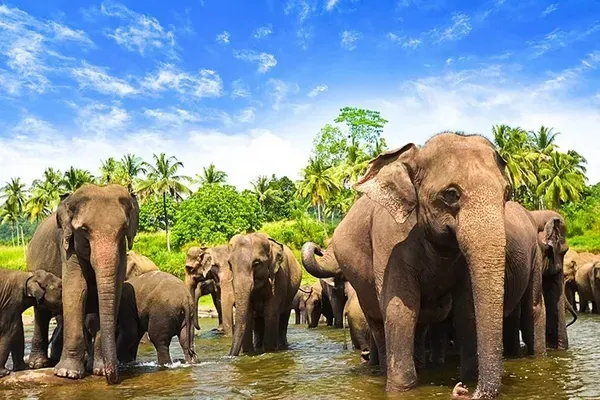
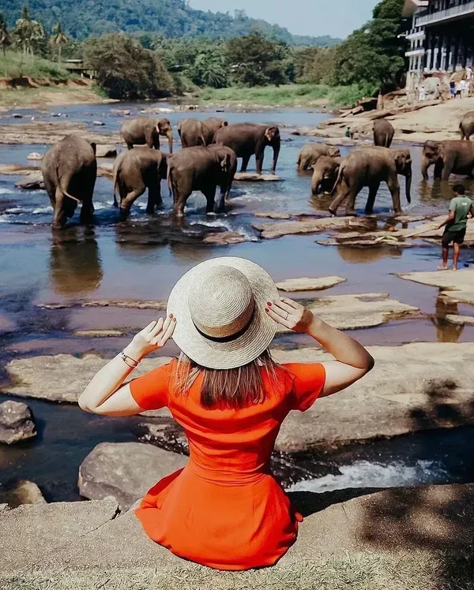
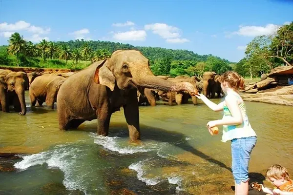
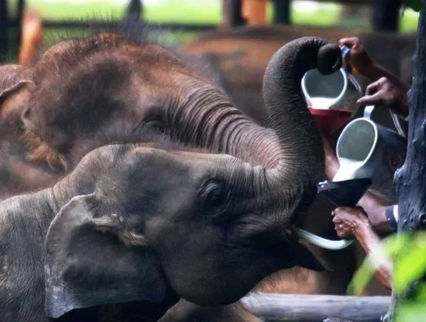
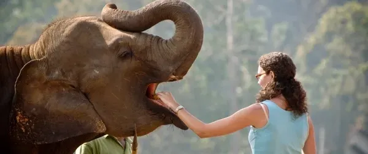
This is just a trip plan. Your opinion is respected and this can be changed as you see fit.
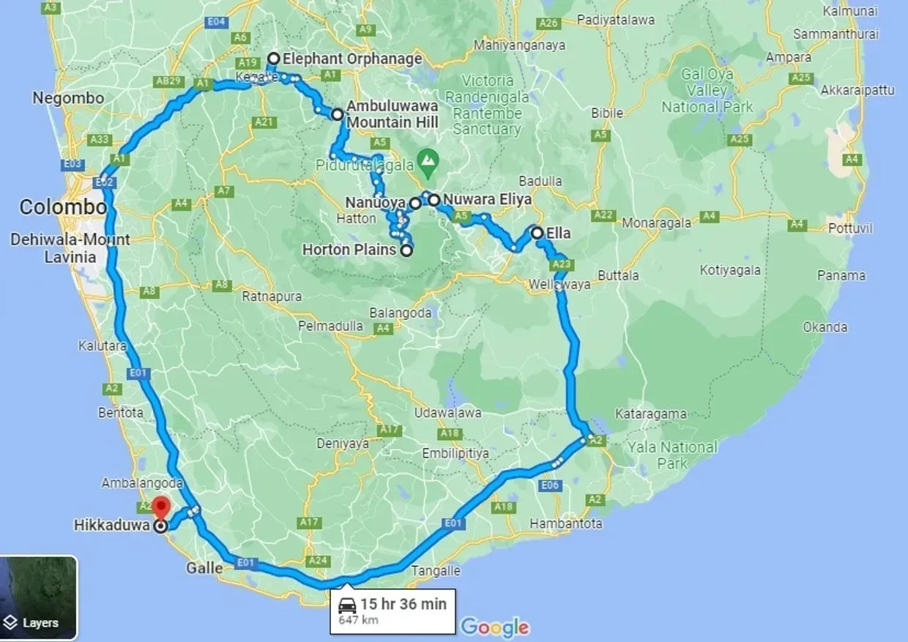
Map of the whole trip